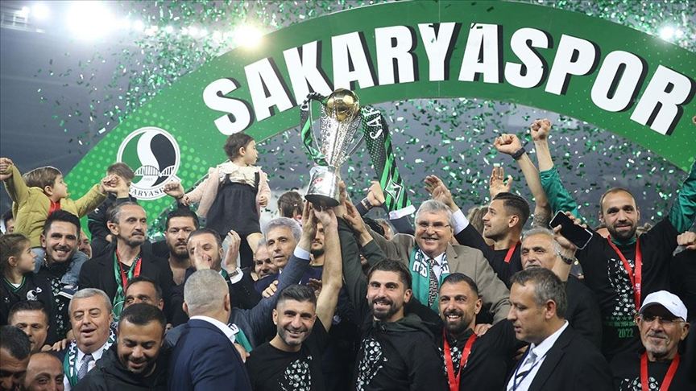

Kulüp Hakkında
Sakaryaspor, 1965 yılında Adapazarı merkezli olarak kurulan ve yeşil-siyah renklere sahip profesyonel bir futbol kulübüdür. Kulüp, zaman içinde birçok kez Süper Lig, 1. Lig ve 2. Lig'de mücadele etmiştir.
Stadyum

Takım, maçlarını 2021 yılında açılan Yeni Sakarya Atatürk Stadyumu’nda oynamaktadır. Stadyum yaklaşık 28.000 kişi kapasitelidir ve modern mimarisiyle dikkat çeker.
Taraftar Grubu – Tatangalar

Tatangalar, Sakaryaspor'un efsanevi taraftar grubudur. Türkiye'nin en tutkulu taraftar topluluklarından biri olarak bilinir. İç saha ve deplasman fark etmeksizin her maçta takımlarını coşkuyla desteklerler.
Başarılar

- Türkiye Kupası Şampiyonu – 1988
- 1. Lig Şampiyonluğu – 1998, 2004, 2006
- Türkiye'nin Süper Lig'e en çok futbolcu gönderen kulüplerinden biri
Yetiştirdiği Ünlü Futbolcular

- Hakan Şükür – Galatasaray ve Milli Takım efsanesi
- Tuncay Şanlı – Fenerbahçe, Middlesbrough ve Milli Takım
- Aykut Kocaman – Fenerbahçe eski teknik direktörü ve futbolcusu
- Oğuz Çetin – Teknik direktör ve eski futbolcu